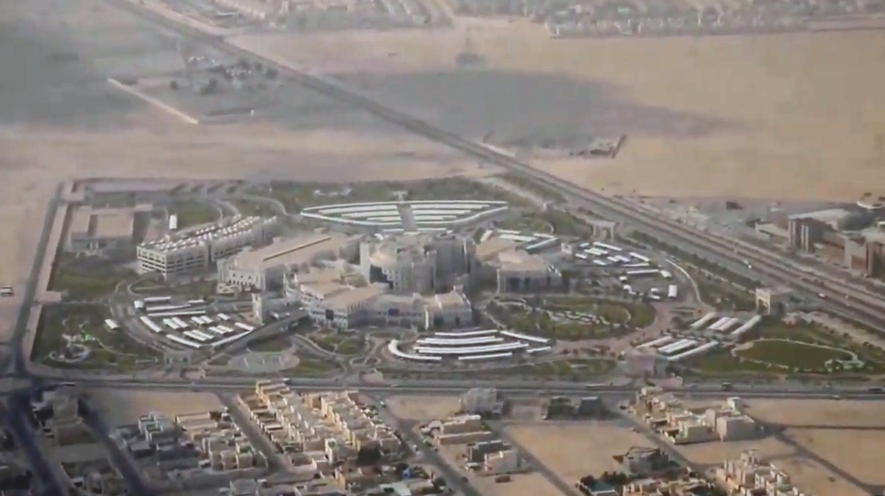
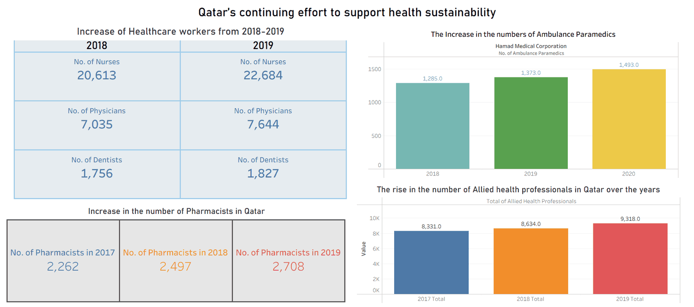
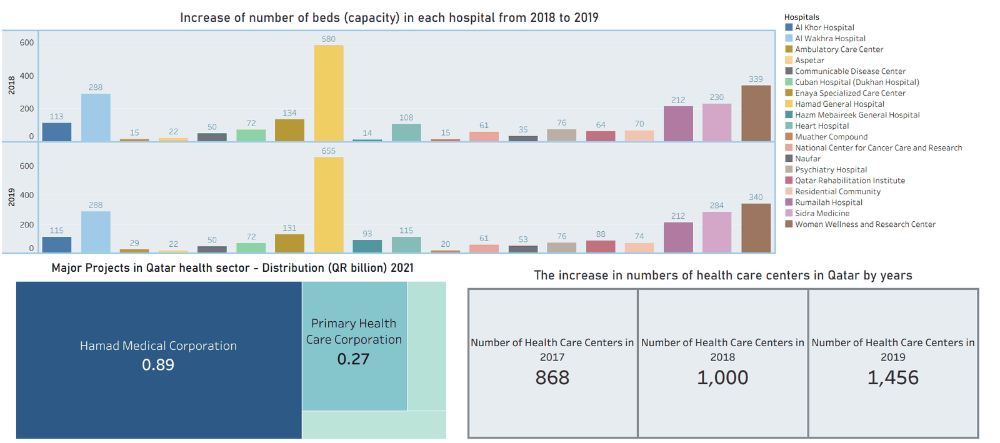

Photo: Alejandro Sarco / Wikimedia Commons (CC BY 3.0)
Case Study: Data Analytics
Healthcare Data Cleaning & Visualization
Cleaning and standardizing a large Qatar healthcare facility dataset, then building interactive Tableau dashboards to track workforce growth, hospital capacity, and sector investment.
Overview
Qatar's healthcare sector has been expanding rapidly: more facilities, more staff, and growing investment year over year. The raw dataset behind that growth, however, was inconsistent: facility names, categories, and yearly figures needed standardizing before any of it could be trusted for reporting. I cleaned and standardized the dataset in Excel using PivotTables and lookup functions, then built two Tableau dashboards to turn the cleaned data into KPIs that categorize facilities and track improvement trends for strategic decision-making.
Dashboard 1: Health Workforce & Sustainability
This dashboard tracks Qatar's healthcare workforce growth from 2017–2020. Nurses grew from 20,613 to 22,684, physicians from 7,035 to 7,644, and dentists from 1,756 to 1,827 between 2018 and 2019 alone. Pharmacists show a steady multi-year climb (2,262 in 2017 → 2,497 in 2018 → 2,708 in 2019), and ambulance paramedics at Hamad Medical Corporation rose from 1,285 (2018) to 1,493 (2020). Total allied health professionals grew from 8,331 in 2017 to 9,318 in 2019.
- Side-by-side 2018 vs. 2019 comparison table for nurses, physicians, and dentists.
- Bar chart tracking ambulance paramedic staffing across three consecutive years.
- Bar chart of total allied health professionals, showing sector-wide workforce growth.
- Year-by-year KPI cards isolating the pharmacist headcount trend.

Dashboard 2: Hospital Capacity & Investment
The second dashboard shifts focus to physical capacity and spending. It compares bed capacity across 22 Qatari hospitals and specialized centers between 2018 and 2019. Hamad General Hospital stands out as by far the largest, growing from 580 to 655 beds, while most other facilities held steady or grew modestly (e.g. Rumailah Hospital 212 → 212, Sidra Medicine 230 → 284). It also breaks down QR 2021 investment by corporation (Hamad Medical Corporation at QR 0.89bn versus Primary Health Care Corporation at QR 0.27bn) and tracks the overall rise in the number of healthcare centers in Qatar: 868 (2017) → 1,000 (2018) → 1,456 (2019).
- Grouped bar chart comparing bed capacity across all 22 tracked facilities, 2018 vs. 2019.
- Treemap comparing major 2021 project investment between the two largest health corporations.
- KPI cards showing the three-year rise in the total number of healthcare centers nationwide.

Approach & Tools
- Data cleaning: standardized inconsistent facility names and yearly figures in Excel using PivotTables and lookup functions to prepare the dataset for analysis.
- Dashboard design: built interactive Tableau dashboards with filtering and categorization by facility, so KPIs could be explored rather than just read.
- Purpose: translate raw multi-year records into a clear, decision-ready view of workforce, capacity, and investment trends for Qatar's health sector.